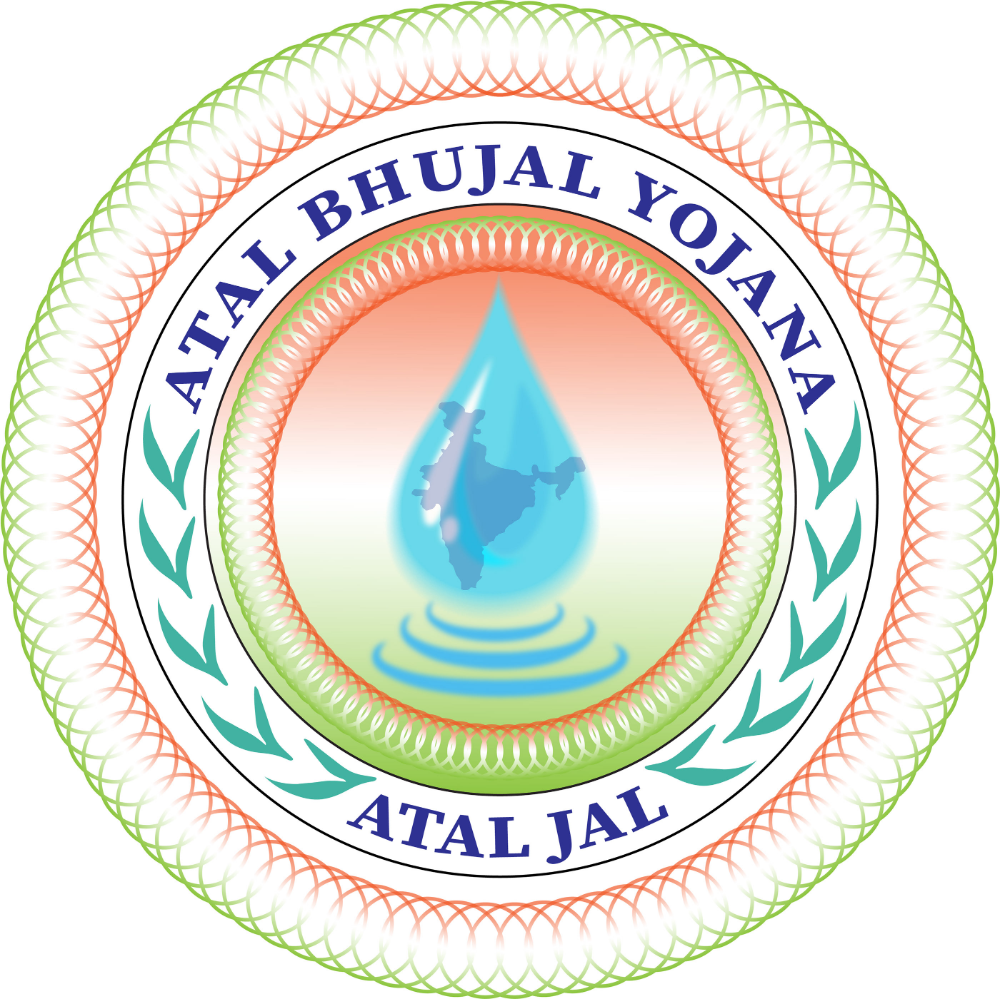
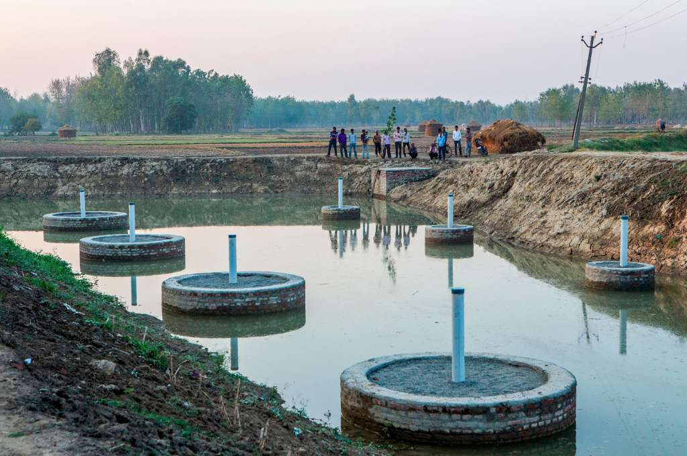

Atal Bhujal Yojana

Atal Bhujal Yojana (also known as Atal Jal) is a groundwater management scheme launched by Prime Minister Narendra Modi on 25 December 2019, on the 95th birth anniversary of former Prime Minister Atal Bihari Vajpayee. The primary aim of the scheme is to improve groundwater management in India, focusing on community participation and sustainable practices.
History
- The scheme was approved by the World Bank Board in June 2018.
- Funded by the World Bank, the scheme was officially launched in December 2019 under the Jal Jeevan Mission.
- The duration of the scheme is from 2020 to 2025.
Implementation Areas
The scheme is being implemented in seven priority states where groundwater depletion is a major concern:
- Gujarat
- Haryana
- Karnataka
- Madhya Pradesh
- Maharashtra
- Rajasthan
- Uttar Pradesh
These states cover around 78 districts and 8,350 Gram Panchayats.
Objectives of Atal Bhujal Yojana
- Encourage the sustainable use of groundwater resources.
- Promote rainwater harvesting, recharge of aquifers, and water conservation.
- Encourage farmers and local communities to participate in groundwater management.
- Support the efficient use of water using modern technologies.
- Improve groundwater monitoring and data collection.
- Ensure financial transparency in the implementation of water conservation projects.

Convergence with Other Schemes
- MGNREGS (Mahatma Gandhi National Rural Employment Guarantee Scheme)
- PMKSY (Pradhan Mantri Krishi Sinchayee Yojana)
- RKVY (Rashtriya Krishi Vikas Yojana)
- Amrit Sarovar (Water Conservation Scheme)
- Other Central and State Government initiatives related to water conservation
Technologies and Practices Promoted
- Sensor-based irrigation for efficient water usage.
- Water-efficient fodder cultivation to reduce excess water consumption.
- Use of drones in agriculture for monitoring soil moisture and irrigation needs.
- Hydrogel technology to improve water retention in soil.
- Internet of Things (IoT)-enabled systems for better water management.
- Traditional water-saving techniques like drip irrigation, sprinkler systems, mulching, and crop diversification.
Beneficiaries
- Marginal and poor farmers.
- Scheduled Castes (SC), Scheduled Tribes (ST), and other vulnerable groups.
- General public in groundwater-dependent regions.
Key Results and Expected Outcomes
- Strengthened institutional framework for groundwater data monitoring and management.
- Improved planning and execution of groundwater conservation projects.
- Development of a comprehensive groundwater database to track availability and quality.
- Better information-sharing mechanisms between central and state agencies.
- Regular groundwater status reports to help with informed decision-making.
Financial Management and Transparency
- Funds are managed through the Public Financial Management System (PFMS).
- Use of Expenditure, Advance, and Transfer (EAT) Module to ensure proper fund utilization.
- All implementing agencies must report financial transactions through PFMS/EAT, and any unreported expenditure will not be considered as program expenditure.
- Ensures transparency and consistency in financial reporting across states.
Other Agriculture and Water Management Schemes
- E-NAM (Online Agri-marketing)
- Gramin Bhandaran Yojana (Local Storage Support)
- Micro Irrigation Fund (MIF)
- National Mission For Sustainable Agriculture (NMSA)
- National Scheme on Fisheries Training and Extension
- Pradhan Mantri Kisan Samman Nidhi (PMKSN) (Minimum Support Scheme)
- Pradhan Mantri Krishi Sinchai Yojana (PMKSY) (Irrigation Support)
- Paramparagat Krishi Vikas Yojana (PKVY) (Organic Farming)
- Pradhan Mantri Fasal Bima Yojana (PMFBY) (Crop Insurance)
Conclusion
Atal Bhujal Yojana is a major step toward addressing India's groundwater crisis. By integrating community participation, modern technologies, and financial transparency, the scheme aims to make groundwater management more sustainable. The success of the program will depend on the active involvement of local communities, efficient implementation, and regular monitoring of groundwater resources.